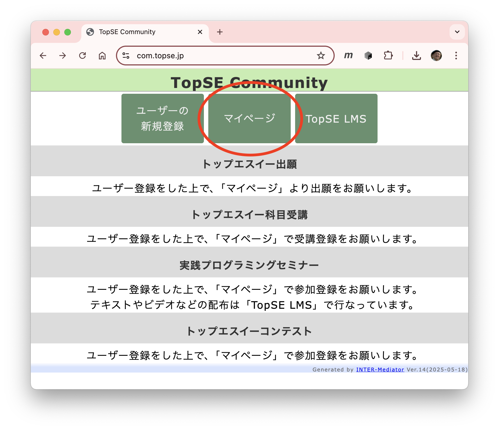
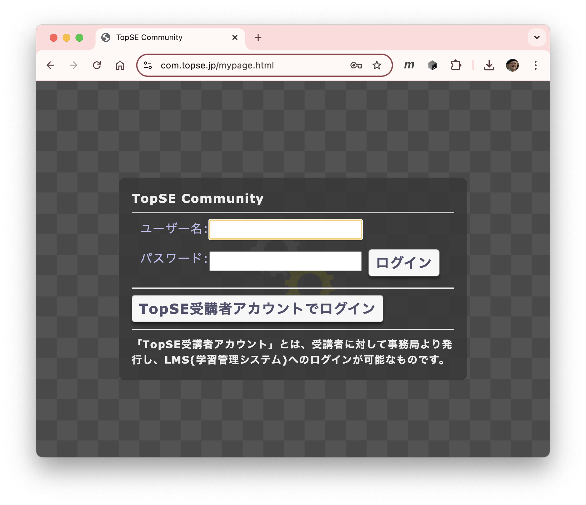
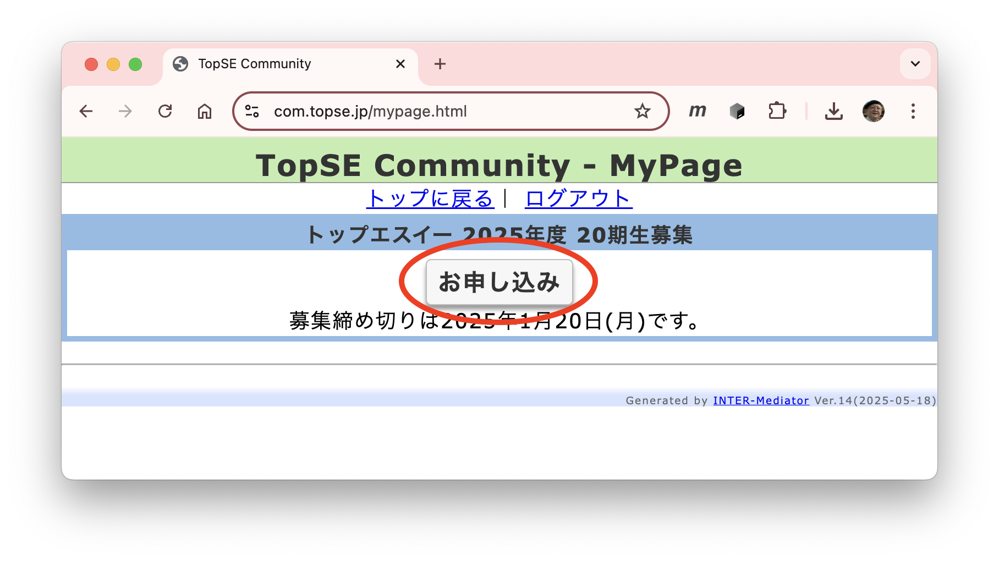
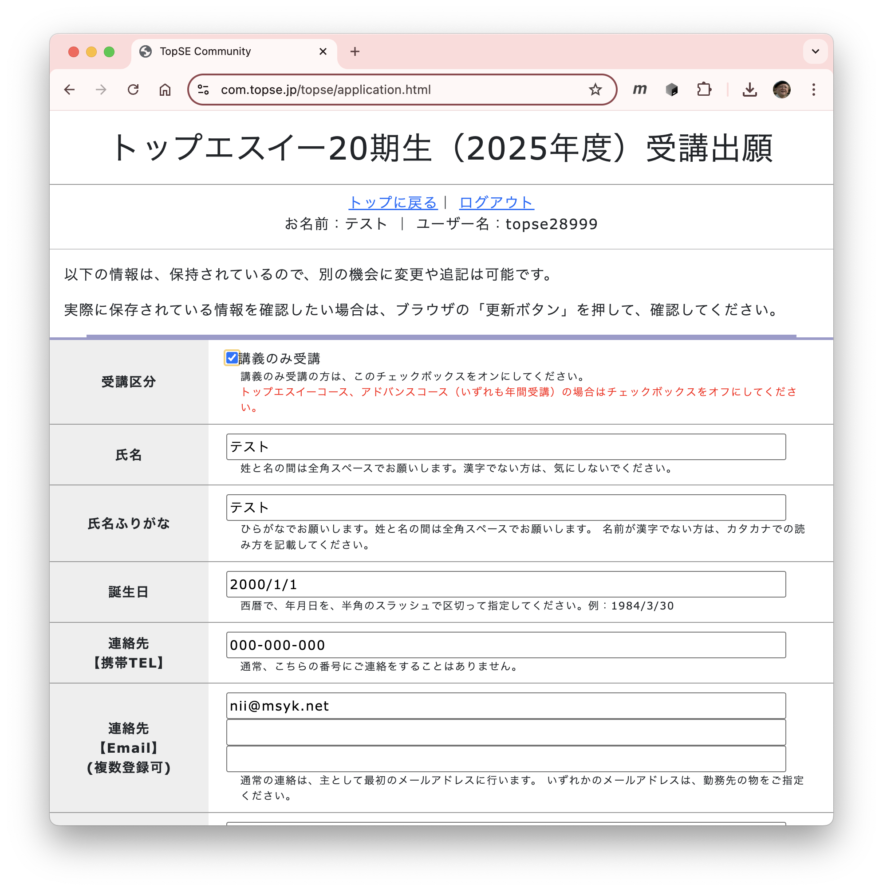
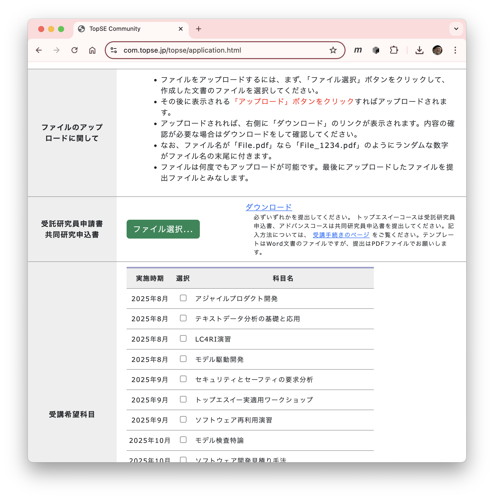

講義のみ受講の申し込み
トップエスイーの短期受講は以下のようにしてお申し込みください．「TopSE Community」のアカウントを取得し，申し込みページに必要事項を記入します．提出の翌月半ばに，可否および手続きについてご案内いたします．また，講義において利用する必要のあるLMSや受講者ポータルについてのご案内は，トップエスイー事務局より，直接メールでお知らせします．
TopSE Communityのアカウント取得
-
TopSE Communityのページ（クリックすると新たなウインドウで表示されます）を開きます．

-
「ユーザーの新規登録」ボタンをクリックして登録ページに移動し，お名前とメールアドレスを入力してください．

- メールが指定されたアドレスにすぐに届くはずです． そのメール内のリンクをクリックしてください．
- さらに別のメールが指定されたアドレスにすぐに届くはずです．そのメール内にユーザー名とパスワードがあります．
短期受講へのお申し込み
- TopSE Communityのマイページに移動します．
TopSE Communityのページからは，「マイページ」をクリックしてください．

- ご自分のユーザー名とパスワードを入力して，ログインをしてください．「ユーザ名」と「パスワード」に，メールで送られてきた文字を間違えないように入力して，「ログイン」ボタンをクリックします．

- マイページの内容が表示されます．トップエスイーの「お申し込み」ボタンがあるので，それをクリックしてください．

- ページの内容が表示されます．最初の「受講区分」で「短期受講」をまず選択してください．お名前とユーザー名は自動的に入力されます．そのほか，ご所属や請求に関する情報などを入力する欄がありますので，入力をお願いします．

- 途中，受託研究員申込書のファイルをアップロードする箇所があります．こちらより，テンプレートを入手し，記入の上，PDFに出力しアップロードをお願いします．アップロードは「ファイル選択」ボタンをクリックしてファイルを指定し，その後に「アップロード」ボタンを押します．
さらに，短期受講が可能な科目が一覧されます．受講されたい科目のチェックを設定します． - 必要事項を入力した後，ページ末尾にある「申し込む」ボタンをクリックしてください．お申し込みしたことはメールでも通知されます．
- 途中まで入力してページを離れても，入力内容は記録されているので，別の日に続きを入力できます．